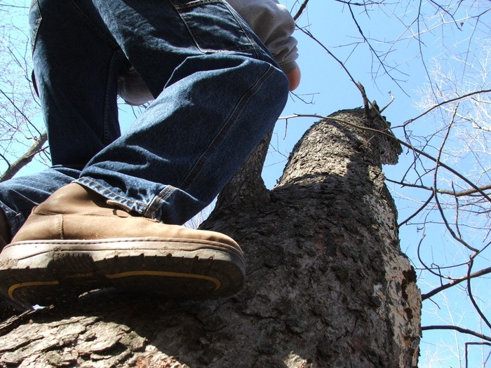
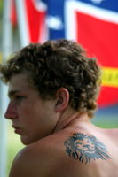

Next Photo
-
Vote
Climbing the Life Tree
Climbing a tree and reaching your goals in life are similar. My friend here represents reaching for your goals, climbing the hard path to the top. The photo doesn't necessarily convey that message as much as I would like, but it is still a pleasant shot. Reminds me of fall and hard work. The tree vanishes into the distance leaving the boots in the main view of the photo.
The depth and angle of this picture make it interesting. The boot scales the tree as I get under and snap a photo. The pure blue and browns blend pleasantly. I don't like, though, the busyness of the branches.
More...
ID: 18
Title: Climbing the Life Tree
Description: Climbing a tree and reaching your goals in life are similar. My friend here represents reaching for your goals, climbing the hard path to the top. The photo doesn't necessarily convey that message as much as I would like, but it is still a pleasant shot. Reminds me of fall and hard work. The tree vanishes into the distance leaving the boots in the main view of the photo.
The depth and angle of this picture make it interesting. The boot scales the tree as I get under and snap a photo. The pure blue and browns blend pleasantly. I don't like, though, the busyness of the branches.
Keywords: boot tree angle life passage goal reaching
Hidden: n
Date added: Sat Mar 04 23:21:43 CST 2006
Date taken: Wed Nov 23 13:55:49 CST 2005
Camera: FUJIFILM.FinePix S5100 .
Resolution: 2272x1704
Mode:
Shutter speed: 838/100
Flash: 16
Exposure time: 10/3200
Iso: 200
Metering: 5
Aperture: 400/100
Focal length: 570/100
Artist: NathanielGuy Mahieu
Copyright: 2006 NathanielGuy Mahieu
Views: 1850
